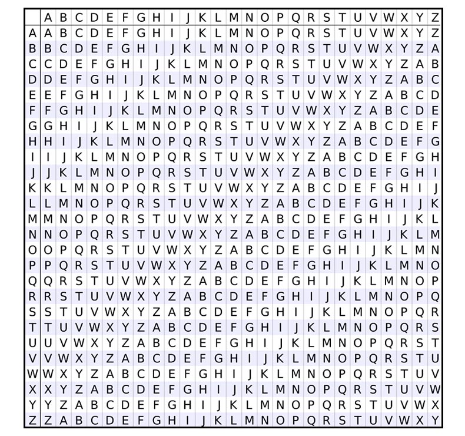

Polyalphabetic Substitution (Vigenère Cipher)
Now that frequency analysis had been invented, cryptographers needed to come up with new ways to confuse those who dared try to break their code. As the name suggests, this cipher uses multiple alphabets to encrypt messages. Typically a code word is chosen and applied letter by letter along the message to denote through the alphabets. The Vigenère Cipher in particular is simply a series of Caesar Ciphers, although it took over 300 years to crack. One of the downfalls of polyalphabetic substitution is its relative complexity, which leads cryptographers to look elsewhere for their ciphers. However, the security of this substitution cannot be overlooked.
In the Vigenère Cipher there are a total of 26 possible shift alphabets, including the normal one that starts with a. Each letter of the keyword represents the shift alphabet that begins with that letter. For example, if the keyword was cat, the first letter of the message would use the shift-2 alphabet that begins with c, the second letter would use the normal alphabet, and the third letter would use the shift-19 alphabet that begins with t. A helpful tool for encrypting this way is the Vigenère table, shown below in the "Practice" section.
Practice
In the exercise below, create your own encrypted message and submit it to the computer for decrypting. If the decrypted message comes out correct, you encrypted it perfectly.
